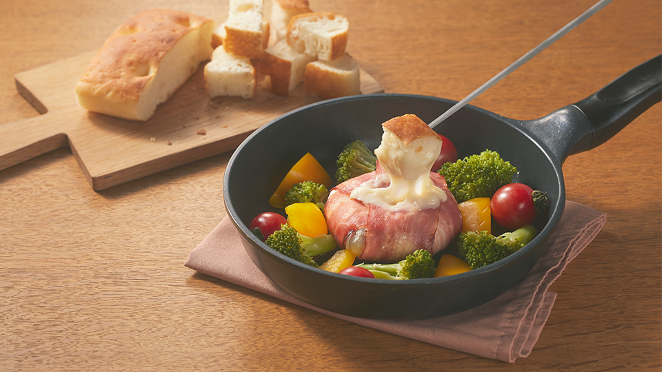
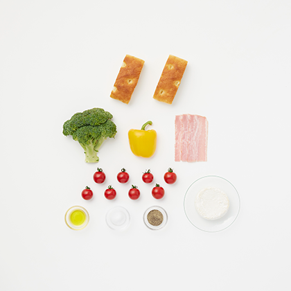

Bacon-wrapped Camembert Cheese Fondue
~394kcal
*Calories are for one person. In addition, calories are a guide.
Ingredient(2 pax)
Ingredients for 2 people :
- Super Ripe Focaccia 2 Pieces
- Camembert Cheese 1 Piece
- Bacon 3 Slices
- Brocolli 1/2 Cups
- Yellow Paprika 1/2 Cups
- Petit Tomatoes 8 Pieces
- Salt A little
- Pepper A little
- Olive Oil 1 Tbsp and 1 Tsp

Instructions
- 1) Divide the broccoli into small bunches, and remove the seeds and calyx from the yellow paprika and cut into large pieces.
- 2) Heat olive oil (1 tbsp) in the skillet and he bake 1. until browned and sprinkle with salt. Add 50 ml of water (not included in the amount), cover and steam until dry.
- 3) Take out once, add olive oil (1 teaspoon), put Camembert cheese wrapped with bacon all over, and bake with the end of the roll facing down. Turn it over and bake the other side.
- 4) Place Camembert cheese in the middle of the skillet, line up the vegetables taken out around and the petit tomatoes with the calyx, and sprinkle with pepper.
- 5) Cut the top surface of Camembert cheese with a knife and mix the whole.
- 6) Warm the focaccia with a toaster for about 90 seconds and add it.